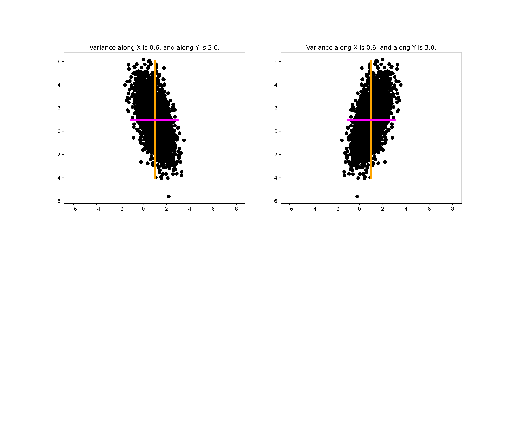
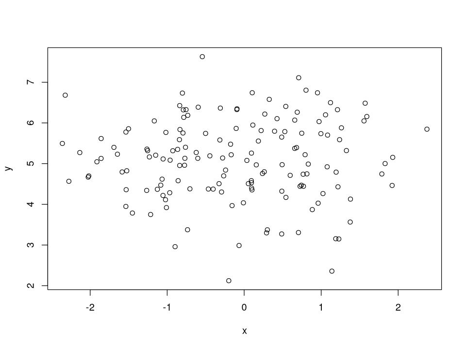
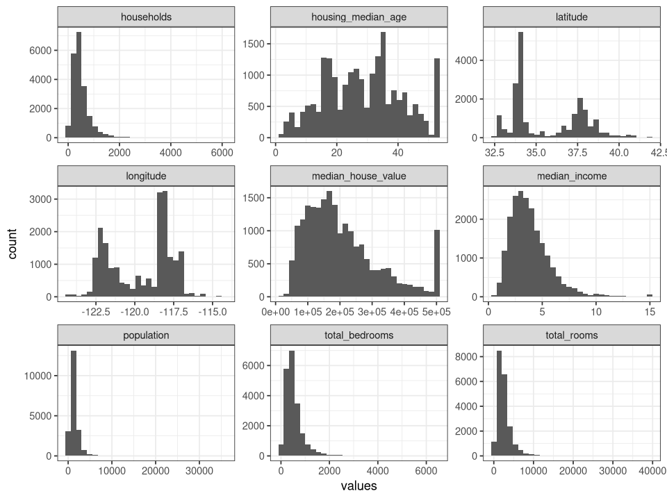

La mejor organización de un conjunto de datos es en variables y observaciones.
En datos tabulares corresponde a columnas y filas.
Cada valor puede ser de una escala de medición (la asignación de números a objetos de acuerdo a ciertas reglas; Stevens, 1946[1]). La escala resultante restringe el tipo de operaciones estadísticas que podemos aplicar a dichos valores. Las escalas son:
Nominal: variables no numéricas. Cuando se usan números para representarlos son solo identificadores arbitrarios. Por ejemplo, \(sexo=\{1, 2\}\) puede ser \(sexo = \{0, 1\}\). La única operación permitida es el conteo.
Ordinal: surge de una operación de ordenamiento, como primero, segundo, tercero, etc. No tiene sentido decir que primero está cerca de segundo (no tienen distancia), y no tienen ua cantidad mensurable, solo representan grupos de pertenencia con un orden dado. Por ejemplo, nivel educativo (que no años de estudio).
Intervalo: representa magnitudes, con la propiedad de la igualdad de la distancia entre puntos de la misma amplitud. Se pueden establecer orden en sus valores, comparaciones y medir las distancias. El 0 no es absoluto sino arbitrario. Por ejemplo, en la escala centígrada de temperatura, la distancia entre 25° C C y 25° C es la misma que entre 20° C y 25° C, pero no se puede decir que 40° C equivale al doble de 20° C (i.e., la operación 40/20 no está permitida en esta escala), debido a la ausencia de 0 absoluto.
Razón: Tiene las mismas propiedades de la escala de intervalo, pero además tienen 0 absoluto. El 0 representa la ausencia del atributo medido, a diferencia del 0 en escalas de intervalo. Con esta escala se puede realizar cualquier operación (ordenamiento, comparación, o aritmética). Por ejemplo, longitud, peso, ingreso, etc.
“A dataset is a collection of values, usually either numbers (if quantitative) or strings AKA text data (if qualitative). Values are organised in two ways. Every value belongs to a variable and an observation. A variable contains all values that measure the same underlying attribute (like height, temperature, duration) across units. An observation contains all values measured on the same unit (like a person, or a day, or a city) across attributes.” Wickham, 2014
El formato tidy es un estándar de presentación que mapea el significado de un conjunto de datos a su estructura. Consiste básicamente en las siguientes tres reglas:
Cada columna es una variable.
Cada fila es una observación.
Cada celda es un valor único.
Tidy data
Estadísticos
Son diferentes de los parámetros.
Sea \(x_{1k}, x_{2k}, \dots, x_{nk}\)\(n\) medidas para \(k=1, 2, \dots, p\) variables. La media aritmética (promedio) de la variable \(k\) es \[
\bar{x}_i=\frac{1}{n}\sum_{j=1}^n x_{jk}
\]
Una medida de dispersión la provee la varianza muestral, cuyas unidades son las de las observaciones al cuadrado, definida para \(n\) mediciones en la variable \(k\) como \[
s_k^2 = \frac{1}{n}\sum_{j=1}^n (x_{jk} - \bar{x}_{k})^2
\]
La raíz cuadrada de la varianza muestral es conocida como la desviación estándar, cuyas unidades son las de las observaciones. S
Para las primeras lecciones, los siguientes temas de álgebra lineal son necesarios para comprender algunos conceptos.
Producto punto (o producto interno)
Dados dos vectores columna \(\mathbf{a} = [a_1, a_2, \dots , a_n]^\top\) y \(\mathbf{b} = [b_1, b_2, \dots , b_n]^\top\), el producto punto de ambos vectores es definido como
Por ejemplo, si \(\mathbf{a}\) es un vector de probabilidades \(p_i = 1/n\) y \(\mathbf{b}\) una variable aleatoria \(x\), el producto punto \(\mathbf{p}^\top \mathbf{x}\) es el promedio
En donde cada elemento de \(\mathbf{C}\) se denota como \(c_{ij}\) con \(m\)-filas y \(k\)-columnas.
Nota: Cuando se escribe \(\mathbf{A} \in \mathbb{R}^{m \times n}\), en notación matricial el primer sobreíndice, en este caso \(m\), hace referencia a las filas, y el segundo, \(n\), hace referencia a las columnas. Lo mismo cuando se indiza. En \(c_{ij}\)\(i\) indica la \(i\)-ésima fila y \(j\) la \(j\)-ésima columna. Este orden se conserva en R cuando se indizan elementos de objetos. Por ejemplo, m[1, 1] retorna el valor de la primera fila, primera columna.
\(\mathbf{A}\) tiene \(n\) columnas, \(\mathbf{B}\) tiene \(n\) filas, \(l\) indiza las columnas de \(\mathbf{A}\) y las filas de \(\mathbf{B}\). Debe notarse que \(c_{ij}\) es un producto punto: el de una fila de \(\mathbf{A}\) con una columna de \(\mathbf{B}\)
\(c_{11}\) es producto punto de la primera fila de \(\mathbf{A}\) (\(i=1\)) con la primera columna de \(\mathbf{B}\) (\(j=1\)), con \(j=i=1\) e iterando sobre \(l=1, 2, 3\)
Como se ilustró antes, para poder multiplicar \(\mathbf{A}\) con \(\mathbf{B}\), las columnas del primero coinciden con las filas del segundo, 2 y 2 respectivamente. El resultado es una matriz con \(m\times k\) filas y columnas.
En R el producto punto se obtiene con el comando %*%. Por ejemplo, para calcular el producto punto \(\mathbf{a}^\top \mathbf{b}\) se obtiene como a %*% b, lo que es equivalente a sum(a * b).
La multiplicación de matrices también se obtiene con %*%. Así, \(\mathbf{A}\mathbf{B}\) se obtiene A %*% B.
Referencias
[1] Stevens, S. (1946). On the Theory of Scales of Measurement. Science, 103(2684), 677-680. doi: 10.1126/science.103.2684.677
# ejemplo de producto punto# vector de resultadosx <-c(10, 5, 6)# vector de probabilidadespx <-rep(1/length(x), length(x))# imprimir resultadoscat(" mean_dot = ", x %*% px,"\n"," by def = ",sum(px * x),"\n","mean_base = ",mean(x))
El valor esperado, o media o primer momento, de la variable aleatoria \(X\) es
\[
\begin{equation*}
\mathbb{E}_X{x} = \begin{cases}
\sum_x xf(x) &\text{ si $X$ es discreta}\\
\int x f(x) \text{d}x &\text{ si $X$ es continua}
\end{cases}\tag{1}
\end{equation*}
\]
Si el contexto no es ambiguo, se escribe simplemente \(\mathbb{E}[x]\). \(f(x)\) es una distribución de probabilidad. Si todos los valores en \(x\) tienen la misma probabilidad de ocurrencia (i.e., \(x\) tiene distribución uniforme, que se representa como \(x \sim \mathcal{U}(a, b)\)) puede pensar en \(\mathbb{E}[x]\) como un promedio de muestras \(X_1, ..., X_n\), con \(f(x) = 1/n\)
La covarianza es una medida de dependencia entre dos variables aleatorias. Dadas dos variables univariadas \(X, Y \in \mathbb{R}\), con realizaciones \(x, y\), la covarianza es definida como el producto esperado de sus desviaciones con respecto a sus medias:
en donde \(\mathbb{E}_X[x], \mathbb{E}_Y[y]\) es la media de \(x\) y \(y\) respectivamente. Notar que \(\text{Cov}_{X,Y}[x, y]\) se puede escribir como
Si denotamos \(x_0 = (x - \mathbb{E}[x])\) y \(y_0 = (y - \mathbb{E}[y])\) como como \(x\) centrada y \(y\) centradas con respecto a su media, la covarianza es
En donde \(\| \mathbf{x_0} \|\) es llamada norma \(L^2\), que no es otra cosa que la distancia euclidiana de un vector con respecto a su origen. Su definición es la raíz cuadrada del producto punto de un vector consigo mismo:
Notar lo siguiente: la definición de la varianza es el valor esperado de las desviaciones cuadradas de \(x\) con respecto a su media, \(x - \mathbb{E}[x]\)
A la cantidad que resulta se le conoce como coeficiente de correlación, \(\rho\). Notar que, reacomodando (\(\sqrt{1/n} \times \sqrt{1/n} = 1/n\)), \(\rho\) es el coseno de similitud definido en \((7)\)
Esta forma de definirlo tiene propiedades interesantes. Por álgebra lineal, sabemos que si dos vectores \(\mathbf{a}, \mathbf{b}\) son ortogonales (i.e., \(\theta = 90^\circ\)) su producto punto \(\mathbf{a}^\top \mathbf{b} = 0\), y por lo tanto son linealmente independientes. Si dos vectores centrados son ortogonales, \(\mathbf{x}_0^\top \mathbf{y}_0 = 0\) y por lo tanto \(\rho = 0\). Es decir, \(\rho = 0\) indica que existe independencia lineal entre los vectores.
Otra observación interesante es la siguiente. Definamos la estandarización de \(x\) como la transformación lineal:
Ahora \(z(x)\) es una transformación de \(x\) que consiste en centrarla y dividirla por su desviación estándar. Por la eq. 11, podemos decir que la correlación \(\rho\) es el producto punto de los vectores centrados \(\mathbf{x}_0\) y \(\mathbf{y}_0\)divididos por el producto de las desviaciones estándar, lo que es equivalente a
\(\rho\) no cambia con transformaciones lineales (suma o multiplicación con mismo signo).
Variables con igual varianza y media pueden tener diferente covarianza y correlación:

A continuación mostraremos algunos de estos importantes resultados usando código de R. Notar que en las definiciones dadas han sido para una población, no para una muestra.
# eq 6: mostrar que la covarianza (x,y) es igual al producto punto de# los vectores centrados divididos por (n - 1) (por qué?). Usar la función# cov(x,y) nativa de R.center <-function(x) x -mean(x)dot_prod <-function(x, y) x %*% ycov_dot <-function(x, y) { n <-length(x) x0 <-center(x) y0 <-center(y)# dividir por (n-1) porque es la covarianza muestral (1/ (n -1)) *dot_prod(x0, y0) |>as.numeric()}set.seed(89)x <-rnorm(150)y <-rnorm(150, 5)cat(sprintf("cov_dot_def: %0.6f\n cov_r_fun: %0.6f",cov_dot(x, y),cov(x, y) ))
cov_dot_def: 0.009486
cov_r_fun: 0.009486
# eq 10: mostrar que la desviación estándar de x es la norma de x centrado# multiplicado por por la raíz del recíproco de (n-1). Usar la función sd(x)# nativa de R.# de la definiciónsd_x <-function(x) {# centrar x x0 <-center(x) nsample <-length(x0) -1# obtener la norma norm_x0 <-norm(x0, type ="2") norm_x0 *sqrt(1/ nsample)}set.seed(89)x <-rnorm(150)cat(sprintf(" sd(x)_norm: %0.6f\nsd(x)_r_fun: %0.6f", sd_x(x), sd(x) ))
sd(x)_norm: 1.042977
sd(x)_r_fun: 1.042977
# fijar tamaño de gráficosoptions(repr.plot.width =8, repr.plot.height =6)# eq 11: mostrar que el coeficiente de correlación es igual al coseno de similitud# para los vectores centrados x0, y0. Usar la función cor(x,y) nativa de R.cosine_sim <-function(x, y) {# obtener el producto punto dot_xy <-dot_prod(x, y)# obtener la norma L2 norm_x <-norm(x, type ="2") norm_y <-norm(y, type ="2") dot_xy / (norm_x * norm_y) |>as.numeric()}set.seed(89)x <-rnorm(150)y <-rnorm(150, 5)plot(x, y)# centrar vectoresx0 <-center(x)y0 <-center(y)# cat(# "cos theta = ",# cosine_sim(x0, y0) |> round(6),# "\n",# " rho = ",# cor(x, y) |> round(6)# )cat(sprintf("cos theta: %0.6f\n rho: %0.6f", cosine_sim(x0, y0), cor(x, y) ))
cos theta: 0.009196
rho: 0.009196

# eq 12: mostrar que la correlación es igual a la covarianza de las variables estandarizadas# nota: en R existe la función scale que centre y escala (divide por SD) las variables,# pero vamos a hacer la nuestra para ilustrarz_score <-function(x) { (x -mean(x)) /sd(x)}set.seed(89)x <-rnorm(150)y <-rnorm(150, 5)# centrar vectoresz_x <-z_score(x)z_y <-z_score(y)t(data.frame(cor_by_def = (1/ (length(x) -1)) * z_x %*% z_y,cor_r_base =cor(x, y),cor_cov_z =cov(z_x, z_y))) |>round(6)
A matrix: 3 × 1 of type dbl
cor_by_def
0.009196
cor_r_base
0.009196
cor_cov_z
0.009196
Las propiedades (1) y (2) son fáciles de verificar numéricamente.
# rho solo mide dependencia lineal, no dependencia en generalfun_quadratic <-function(x) { xmax <-max(x) x * (xmax - x) +rnorm(length(x), 0, 0.1* xmax)}set.seed(456)x <-seq(0, 10, 0.1)y <-fun_quadratic(x)plot(x, y)abline(lm(y ~ x))print(sprintf("La correlación es de %0.3f", cor(x, y) ))
[1] "La correlación es de -0.003"
Off topic: si \(\rho\) no sirve para medir dependencia no lineal, ¿qué podemos usar?
Para medir dependencia no lineal existen alternativas, como la información mutua o la correlación de la distancia.
Para calcular la información mutua instalamos el paquete infotheo usando install.packages('infotheo'), y para correlación de la distancia instalamos energy de la misma manera.
# cargamos los paqueteslibrary(infotheo)library(energy)set.seed(456)x <-seq(0, 10, 0.1)y <-fun_quadratic(x)# crear df para discretizar en binsdf_raw <-data.frame(x = x, y = y)# cantidad de bines recomendado la raíz cuadrada de Ndf_discretized <-discretize(X = df_raw, nbins =sqrt(NROW(df_raw)))# calcular la información mutuamut_info <-multiinformation(df_discretized, method ="mm")# calcular la correlación de la distanciacor_dist <-dcor(x, y)cat(sprintf("MultInf: %0.3f\nCorDist: %0.3f\nAmbas diferente de 0", mut_info, cor_dist ))
ERROR: Error in library(infotheo): there is no package called ‘infotheo’
# invariante a transformaciones linealesx <-seq(0, 10, 0.1)set.seed(456)y <- x +rnorm(length(x), 1, 2)original_rho <-cor(x, y)# multiplicar x por 2, sumar 3 a ytransformed_rho <-cor(x *2, y +3)cat(sprintf(" OriginalRho: %0.3f\nLineTransRho: %0.3f", original_rho, transformed_rho ))
OriginalRho: 0.823
LineTransRho: 0.823
1.1.2. Covarianza multivariada
Datos multivariados
Los datos multivariados surgen cuando, para investigar algún fenóomeno o proceso, se seleccionan \(p\geq 1\)variables o características para medir. Todos los valores se miden para una misma unidad observacional (individuo, objeto, proceso, máquina, etc.). Esas variables son llamadas dimensiones.
El análisis multivariado tiene como objeto el análisis y entendimiento de datos en varias dimensiones. Partimos de un arreglo \(\textbf{X} \in \mathbb{R}^p\).
Denotamos como \(x_{jk}\) a la \(k\) variable (columna) medida en la \(j\) observación (fila). Cada \(x_{j}\) tiene \(p\) dimensiones (o variables/columnas).
Una selección de 4 recibos de una librería se obtuvieron para evaluar la venta de libros. Cada recibo tenía el número de libros vendidos y la cantidad de cada venta. Sea la primera variable la vanta en dólares y la segunda el número de libros. Podemos considerar el número correspondiente de recibos como cuatro mediciones de dos variables. Los datos en forma tabular serían
Para abreviar, \(\sigma_{X_1X_1}\) se puede denotar simplemente como \(\sigma_{11}\). Dado que estaremos trabajando con muestras, estaremos interesados solo en la covarianza muestral.
La matriz de covarianza muestral se denota con \(S\)
sobre \(i=1, 2, ..., n\) con tamaño de muestra \(n\) (la cantidad de filas en \(\mathbf{X}\)). En donde \(\mathbf{E}[x_j] = \bar{x}_j\) es el promedio o valor esperado de la variable \(x_j\) (e igual para \(k\))
Los elementos de la diagonal, la covarianza de una variable con respecto a sí misma (i.e., \(j=k\)), son las varianzas muestrales
Notar que a cada entrada le restamos la media de su columna. Por analogía con la eq. 10, paro ahora usando matrices centradas en vez de vectores, la matriz de covarianza es
\[
S = \frac{1}{n-1}\mathbf{X_0}^\top \mathbf{X_0} \tag{14}
\]
Correlación
La matriz de correlaciones \(\mathbf{R}\) es similar a la matriz de covarianzas:
Es decir, la matriz de correlaciones \(\mathbf{R}\) es idéntico a la covarianza de las variables estandarizadas.
# usamos los datos del ejemplo anteriorX <-data.frame(X_1 =c(42, 52, 48, 58),X_2 =c(4, 5, 4, 3))# la matriz de covarianza usando la función nativa de R escov_r_base <-cov(X)# la matriz de covarianza usando la definición de eq 14 esX0 <-scale(X, scale =FALSE) # centrar la variablecov_def <- (1/ (nrow(X) -1)) *t(X0) %*% X0 # producto de matrices divididas por 1/(n-1)list(`Cov R Base`= cov_r_base,`Cof definition`= cov_def)
$`Cov R Base`
A matrix: 2 × 2 of type dbl
X_1
X_2
X_1
45.33333
-2.0000000
X_2
-2.00000
0.6666667
$`Cof definition`
A matrix: 2 × 2 of type dbl
X_1
X_2
X_1
45.33333
-2.0000000
X_2
-2.00000
0.6666667
# La diagonal de la matriz de covarianza son las varianzasvar1 <-var(X0[, 1]) # varianza de la columna 1var2 <-var(X0[, 2]) # varianza de la columna 2df_var <-data.frame(var_r_base =c(var1, var2),var_diag_cov_matrix =diag(cov_def))print(df_var)
# e1. 15: corroborar que da la misma matriz de correlaciones que la función de R nativaZ <-scale(X)cor_Z_def <- (1/ (nrow(X) -1)) *t(Z) %*% Zcor_X_base <-cor(X)list(cor_Z_def = cor_Z_def,cor_X_base = cor_X_base)
$cor_Z_def
A matrix: 2 × 2 of type dbl
X_1
X_2
X_1
1.0000000
-0.3638034
X_2
-0.3638034
1.0000000
$cor_X_base
A matrix: 2 × 2 of type dbl
X_1
X_2
X_1
1.0000000
-0.3638034
X_2
-0.3638034
1.0000000
Gráficos de matriz de correlaciones
Cuando se tienen datos multivariados, una forma de ver relaciones entre las variables, para medir dependencia lineal, es creando una matriz de correlaciones de las variables numéricas y graficarlas. El gráfico resultante suele ser llamado gráfico de correlaciones, que es una representación gráfica de la matriz. Dado que la escala de la correlación diverge, es decir, va de [-1, 0] y de [0, 1], es recomendable escoger una paleta de tres colores diferentes con un color en el valor central.
Una de las utilidades de la matriz de correlaciones la extracción de características (feature extraction). Si dos variables correlacionan entre sí, entonces una de ellas contiene información redundante, por lo que no es necesario ingresar ambas.
1.2. Visualización de datos multivariados
Existen diversas maneras para visualizar datos multivariados que dependen de los atributos de los datos. Por ejemplo, si son categóricos o variables continuas, o combinación de ambas.
Se van a ilustrar algunas maneras de realizar análisis exploratorio de datos y también cómo extraer información relevante a partir de la matriz de correlaciones.
Para lo anterior, debemos descargar primero un conjunto de datos multivariados, los datos de viviendas de distritos de California.
options(tidyverse.quiet =TRUE)theme_set(theme_bw()) # fijar un tema para gráficos# cargar librería tidyversesuppressPackageStartupMessages(library(tidyverse))# leer datos de urlhousing <-read_csv("https://raw.githubusercontent.com/ageron/handson-ml/master/datasets/housing/housing.csv",col_types =cols())# ver la estructura de los datosglimpse(housing)head(housing)
De las 10 variables solo 9 son numéricas, ocean_proximity es categórica. Nos centramos en las primeras 9. Para visualizar rápidamente los datos los transformaremos a formato largo usando pivot_longer. Revisar esta notebook para ver cómo.
# ahora todos los valores numéricos están colapsados en 'values', y los nombres de las columnas en 'variables'# podemos crear un histograma que tome 'values', y separarlos por variable usando facet_wrap# creará un mosaico de 3x3ggplot( housing_long,aes(x = values)) +geom_histogram() +# para facilitar ver las variables en su propia escala, fijamos escala librefacet_wrap(~variables, scale ="free") +theme_bw()
`stat_bin()` using `bins = 30`. Pick better value with `binwidth`.
Warning message:
“Removed 207 rows containing non-finite values (stat_bin).”

Notar que los valores de ingreso mediano (median_income) no exceden el valor de 15. Así como está, no tenemos forma de saber qué representa. Los salarios fueron limitados entre 5 y 15, y representan diez miles (un valor de 3 es $ 30’000).
median_house_value, la variable de respuesta (o variable objetivo) también fue restringida a 500’000. Esto podría ser problemático si se quieren predecir el valor de una casa por encima de 500’000 pero un modelo no fue entrenado fuera de esos rangos.
Las variables tienen diferentes escalas.
Varias distribuciones tienen colas largas (tienen concentrados valores al inicio, luego se extienden a la derecha un rango muy largo).
Tres son multimodales.
Un objetivo posible de este conjunto de datos es predecir el valor de las casas a partir del resto de variables. Para ver cómo se relacionan las variables trataremos el problema como \(\text{median\_house\_value } ~ \text{variable}_k\). Transformamos nuevamente usando pivot_longer.
# transformar los datos, dejando median_house_value como targethousing_long <- housing |>pivot_longer(cols =-median_house_value,names_to ="variables",values_to ="values" )head(housing_long)
A tibble: 6 × 3
median_house_value
variables
values
<dbl>
<chr>
<dbl>
452600
longitude
-122.23
452600
latitude
37.88
452600
housing_median_age
41.00
452600
total_rooms
880.00
452600
total_bedrooms
129.00
452600
population
322.00
# grafico de dispersionggplot( housing_long,aes(x = values, y = median_house_value)) +geom_point() +# añadir tendencia linealgeom_smooth(method ="lm") +facet_wrap(~variables, scale ="free")
Obtener la matriz de correlaciones para seleccionar los mejores predictores lineales.
# usamos solo observaciones completas, omitiendo NAshousing_cor_mat <- housing |>cor(use ="complete.obs")housing_cor_mat# seleccionamos la columna median_house_value y ordenamos por correlaciónhousing_cor_mat |># convertir a dataframe, dado que cor retorna matrixas.data.frame() |>select(median_house_value) |>arrange(desc(median_house_value))
Las variables con mejor predicción lineal son median_income, total_rooms y housing_median_age.
Conclusión
Esta aplicación vista de la matriz de correlaciones es importante por sí misma, pero tanto la matriz de correlaciones como la matriz de covarianza contienen información que estaremos explotando en los siguientes temas.